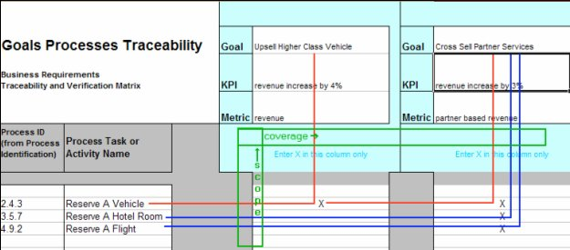

| Task: Assemble Requirements Traceability and Verification Matrix |
 |
|
The Requirements Traceability and Verification Matrix (RTVM) provides requirements traceability between levels or types of requirements. This activity establishes the RTVM at the start of the engagement by tying the business requirements (including processes and use cases) to their origins in the goals and objectives of the enterprise. |
| Roles | Primary Performer: | Additional Performers: |
|---|---|---|
| Inputs | Mandatory:
| Optional:
|
| Outputs |
|
|
The Requirements Traceability and Verification Matrix (RTVM) has served its traditional purpose of providing traceability and verification between levels of requirements and their verification methods. This activity, now performed as part of the Customer Baseline (at Business Requirements Review) extends the notion of the RTVM in the following important ways:
The key parts of the RTVM are:
 Figure 1: Trace Processes to Goals Figure 1 describes how the RTVM is used to trace goals to business processes. The source item is the goals, listed across the RTVM in columns. The destination item is the business process, listed on consecutive rows from top to bottom. The traceability links are denoted by ‘X’ marks. The scope and coverage views, shown in green, are used to ascertain completeness in the goals and conformance in the processes. In SOMA engagements, the goals are directly referenced in the Goal Service Model. In other cases, the goals may refer to contracted business outcomes or to wants and needs or to specific enterprise performance criteria. In all cases, it is clear that the business RTVM is a key deliverable that links the business requirements to specific enterprise objectives. |
| © Copyright IBM Corp. 1987, 2012 All Rights Reserved Property of IBM These materials are intended only for use as part of an IBM engagement |